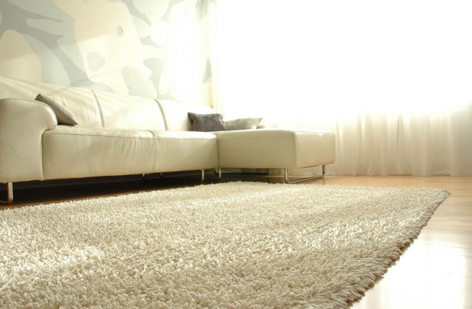
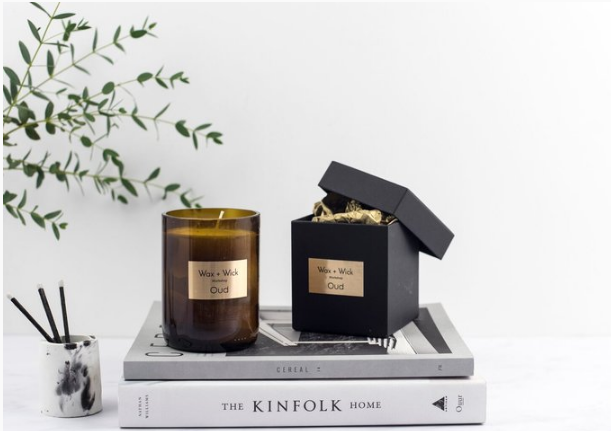

1. Swap for organic beddings and pillow cases like this one which are 100% organic and fairtrade
2. Invest in an area rug made from recycled material. For example, this rug which is made from an organic cotton and bamboo rayon blend.
3. Look for upcycled accessories like this candle company. Wax+Wick is a London-based company that minimizes waste by repurposing wine bottles as candle jars.
